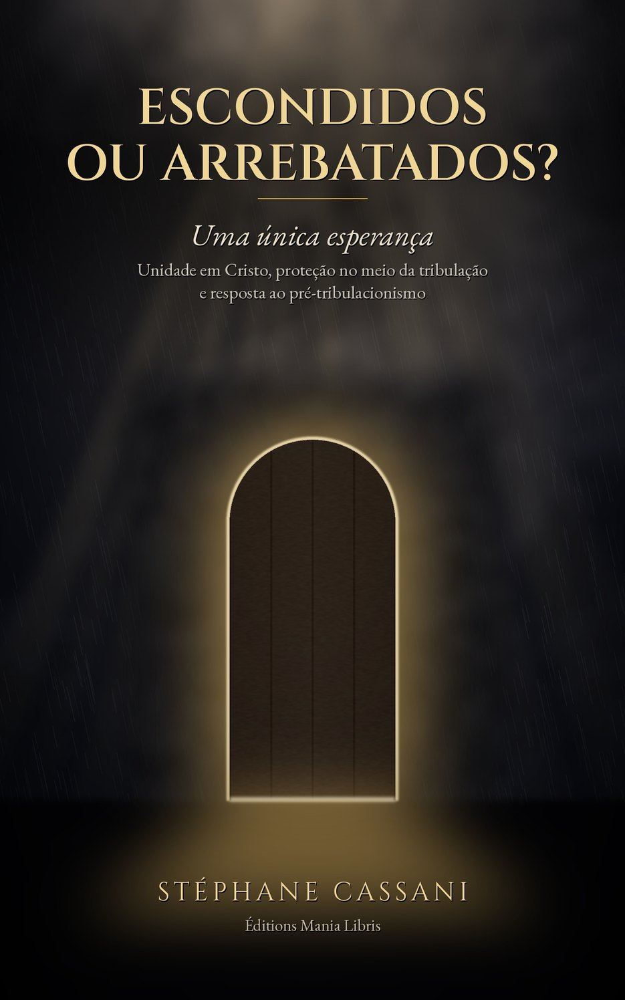

Uma única esperança — Unidade em Cristo, proteção no meio da tribulação e resposta ao pré-tribulacionismo

A Igreja será arrebatada antes da Grande Tribulação, ou atravessará esse período sob a proteção de Deus? Muitos cristãos sinceros esperam um arrebatamento secreto que os tiraria da terra antes de qualquer provação.
Neste estudo bíblico conciso, Stéphane Cassani retoma os textos-chave — Mateus 24, Lucas 21, 1 e 2 Tessalonicenses, Apocalipse 3, 12 e 20 — deixando a Bíblia explicar a Bíblia. Ele mostra que há um só Corpo, uma só última trombeta e uma só esperança, e que Deus sabe esconder os seus no meio dos juízos, como Israel em Gósen ou Elias junto ao ribeiro, antes de os arrebatar ao seu encontro quando Cristo aparecer.
Um livro respeitoso para com quem pensa de outro modo, escrito para fortalecer a fé: construir sobre a rocha, seja qual for o caminho pelo qual o Senhor nos conduza até ele.
“Vai, ó povo meu; entra em teus quartos, e fecha tuas portas ao redor de ti; esconde-te por um momento, até que a ira tenha passado.” — Isaías 26:20
Para todo leitor da Bíblia que se pergunta o que a Escritura realmente diz sobre o arrebatamento e a tribulação, para a leitura pessoal ou em grupo: cada capítulo termina com perguntas para reflexão, e um anexo reúne os textos-chave.
Ebook Kindle e brochura na Amazon — audiolivro gratuito, narrado pelo autor
Ebook Kindle Brochura 🎧 Ouvir o audiolivro Voltar ao Catálogo